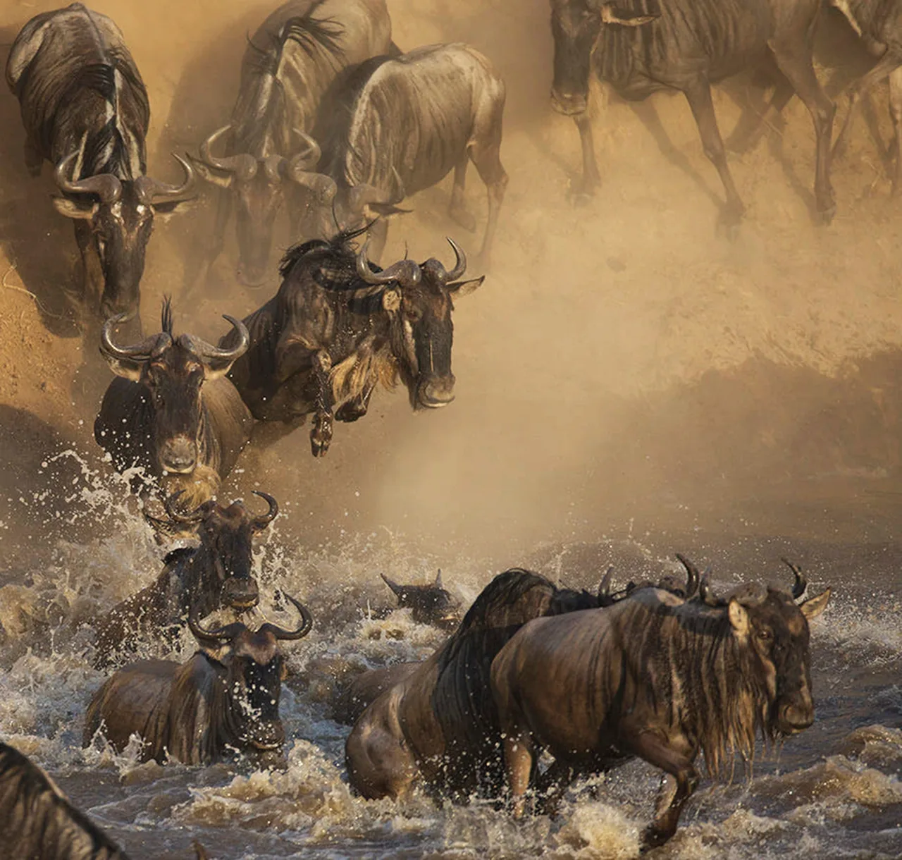
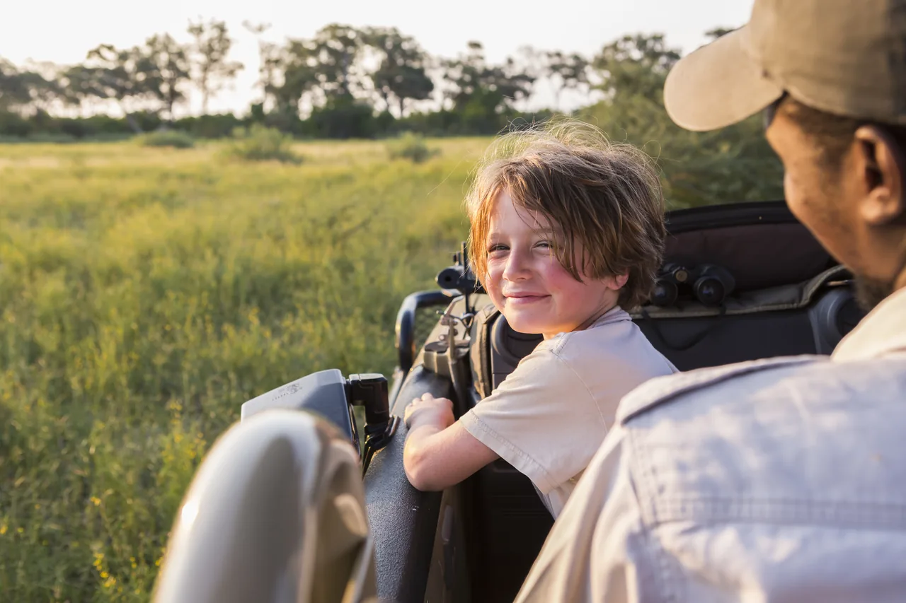

The Safari Journal.
Field notes and honest travel advice from our team in Arusha. Everything we wish every traveller knew before their first safari.
Plan with confidence.
 Planning
PlanningThe Best Time to Visit Tanzania: A Month by Month Guide
Dry season or green season, calving or river crossings? Our month by month guide explains what each part of the Tanzanian year brings, from wildlife and weather to crowds and prices.
Read
Parks & wildlifeThe Great Migration Month by Month
Where are the herds in March, or in August? Follow the wildebeest migration through the Serengeti year, from calving on the southern plains to crossings on the Mara River and the long journey home.
ReadPracticalWhat to Pack for a Tanzania Safari
Neutral colours, warm layers and a soft bag that fits a light aircraft: our practical packing guide covers clothing, binoculars, cameras, power and the small comforts that make long days in the bush easier.
Read Planning
PlanningHow Much Does a Tanzania Safari Cost?
Park fees, accommodation, season and group size all shape the price of a safari. We explain what drives the cost, what is included and excluded, how deposits work and how to think about tipping.
Read Practical
PracticalYour First Safari: Tips and Etiquette for the Bush
From the rhythm of a safari day to the quiet etiquette of a good sighting, our first-timer's guide covers respect for wildlife and communities, photographing people, and how to get the most from every drive.
Read Special interest
Special interestSafari and Zanzibar: The Perfect Bush and Beach Journey
Dust to sand, Land Cruiser to dhow. Combining a northern Tanzania safari with the white beaches and old stone streets of Zanzibar is one of Africa's great journeys. Here is how to plan it well.
Read Practical
PracticalTanzania Travel Essentials: Visas, Health and Practicalities
Visas, vaccinations, malaria precautions, insurance, money and staying connected: our general guide to the practical side of travelling to Tanzania, with a reminder to confirm current rules with official sources.
Read
Special interestA Family Safari in Tanzania: Planning for All Ages
Few experiences spark a child's curiosity like their first elephant. Our guide to family safaris in Tanzania covers ideal ages, pace, private vehicles, keeping young explorers engaged and travelling safely together.
ReadNew guides, seasonal sightings and quiet inspiration.
Occasional letters from Arusha. No noise, just the wild.